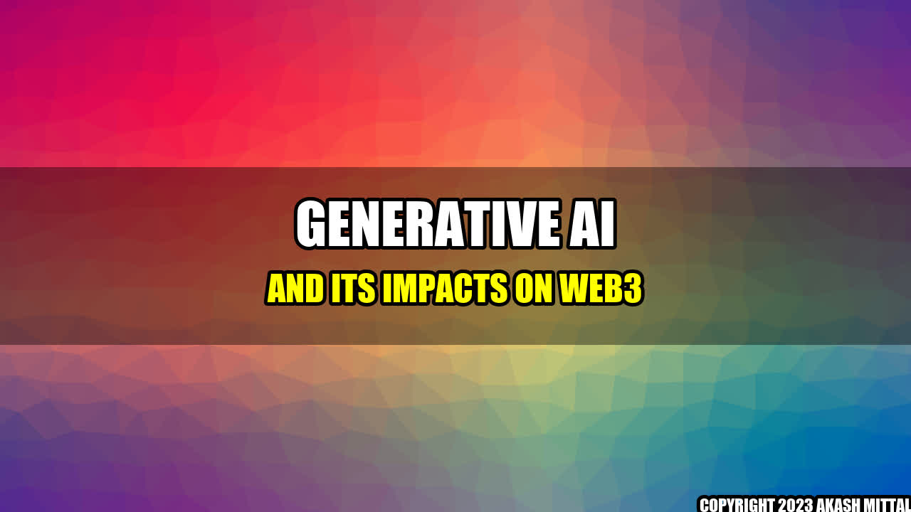

Generative AI and Its Impacts on Web3

Mark, a 35-year-old blockchain enthusiast from San Francisco, was browsing through the trending topics on Twitter when he stumbled upon a tweet that caught his attention. It read, "Generative AI is the future of Web3". Mark, who had been closely following the developments in the blockchain industry, knew that Web3 was all about decentralization and making the web more secure and user-centric. He wondered how generative AI could bring about a revolution in Web3.
The Basics of Generative AI
Generative AI refers to the use of artificial intelligence (AI) to create new and unique content. Unlike traditional AI systems that are pre-programmed to perform specific tasks, generative AI uses deep learning algorithms to analyze vast amounts of data and generate new outputs that are not based on any preconceived rules or patterns. This makes generative AI highly adaptable and capable of creating novel and innovative designs, music, text, and even videos.
A typical generative AI system consists of two parts: the generator and the discriminator. The generator creates new content, while the discriminator evaluates whether the content generated by the generator is real or fake. Through continuous feedback loops, the generator gradually learns to create more realistic and believable content that can fool the discriminator.
Examples of Generative AI in Web3
The potential applications of generative AI in Web3 are numerous and varied. Below are some quantifiable examples:
- Secure Passwords: Generative AI can be used to create complex and secure passwords that are resistant to brute-force attacks. Instead of relying on traditional password generators that use basic patterns, generative AI can create unique passwords that are both highly secure and easy to remember.
- Decentralized Finance (DeFi): With generative AI, DeFi platforms can create smart contracts that are autonomous and self-executing. This would reduce the need for intermediaries and make financial transactions faster, cheaper, and more secure.
- Digital Identity: Generative AI can be used to create unique digital identities that are linked to real-world identities. This would make it easier to verify people's identities without relying on centralized authorities.
- Tokenized Assets: One of the most promising applications of generative AI in Web3 is the creation of tokenized assets. Generative AI can be used to create unique, one-of-a-kind digital assets that can be sold as NFTs (non-fungible tokens) on blockchain marketplaces.
The Impacts of Generative AI on Web3
The use of generative AI in Web3 has the potential to bring about several positive impacts:
- Enhanced Creativity: Generative AI can help users unleash their creativity by providing them with new and unique ideas that they may not have thought of otherwise. This can lead to the creation of innovative designs, music, and art.
- Increased Security: Generative AI can help make Web3 more secure by creating complex and secure passwords and by enabling the creation of autonomous and self-executing smart contracts.
- Greater Decentralization: The use of generative AI can help promote decentralization in Web3 by reducing the need for centralized intermediaries and authorities.
Conclusion
In conclusion, generative AI has the potential to bring about a revolution in Web3 by enhancing creativity, increasing security, and promoting decentralization. As the blockchain industry continues to evolve, it will be interesting to see how generative AI is used to create new and innovative applications that were previously thought impossible.
Reference URLs:
- https://www.cointelegraph.com/news/why-generative-ai-could-be-the-future-of-web3
- https://www.analyticsinsight.net/generative-ai-the-future-of-web3-and-blockchain/
- https://hackernoon.com/generative-ai-web3-and-revolution-ii7v35md
Hashtags: #GenerativeAI #Web3 #Blockchain #Creativity #Security #Decentralization
Article Category: Technology
Akash Mittal Tech Article
Share on Twitter Share on LinkedIn